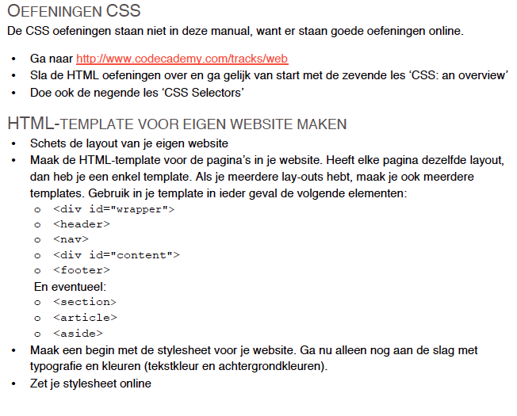

Weekoverzicht Internetstandaarden
| HC | WG | |
|---|---|---|
| Blokweek 1 | CMD AAN! | CMD AAN! |
| Blokweek 2 | DE ZOEKTOCHT NAAR BETEKENIS - Semantiek HOE MAAK JE HTML OP - Praktisch DAT IS DOM! - HTML basis UPLOAD – Publiceren van jouw website |
Drieluik oefening analyse
Tools Eerste website maken en online zetten |
| Blokweek 3 | ALGEMEEN BESCHAAFD HTML - Syntax vs. semantiek FUT (Frequently Used Tags) - Content structuur aangeven A BOX IN A BOX IN A BOX ... - Block vs. inline vs. invisible DON'T BELIEVE THE HYPE - nieuwe html5 elementen |
Huiswerk bespreken Criteria HTML Onderzoek menustijlen |
| Blokweek 4 | DIVIDE ET IMPERA – Scheiding vormgeving, inhoud en gedrag HOE PAS JE CSS TOE - Praktisch SELECTA – Hoe selecteer je elementen MOOIE DINGEN MAKEN - Over kleur en typografie |
FEEDBACKSESSIE HTML Demo one-column en two-column layout Wireframes schetsen |
| Blokweek 5 | LoVe HAte YOUR LINKS - Pseudo classes DE LEEGTE IS JE VRIEND - Box model LEG HET NEER - layout |
Vlakverdeling oefening
Grove vlakverdeling met CSS |
| Blokweek 6 | IMAGINE THAT! – invoegen van afbeeldingen CSS3 FROM HELL – the perks and the prefix hell of CSS3 GOED GEDRAG WORDT BELOOND - Javascript intro |
FEEDBACKSESSIE CSS jQuery |
| Blokweek 7 | OVER HET SNEL DOCH SLORDIG INZETTEN VAN JAVASCRIPT - JQuery MANIPULEER JE DOM - Luisteren naar en inspelen op gebeurtenissen |
Werken aan eindopdracht |
| Blokweek 8 | Herfstreces | Herfstreces |
| Blokweek 9 | SYMPOSIUM: STUDENTEN PRESENTEREN VOORBEREIDING OP TENTAMEN VEELGESTELDE VRAGEN OVER WEBSITE |
Verplichte werkgroep! Elkaars website beoordelen. |
| Blokweek 10 | Toetsweek | Toetsweek - geen lessen |
Huiswerk en college
Vragen over het huiswerk of over het hoorcollege?
college over box-model, layout en pseudo-classes


Box-model


Inhoud Border Padding Margin Width + Height
Centreren
margin:auto;
een element zichzelf laten centreren t.o.v. zijn omvattende elementtext-align:center;
de inhoud van een element centreren

Oefening vlakverdeling
- Voorbeeld
- Maak groepen van 2 of 3 mensen
- Bekijk de code die de docent uitdeelt
- Teken de pagina's op papier
- Gebruik 'scribles' voor tekst bijvoorbeeld
Huiswerk
- Beginneling - Laatste oefeningen CSS,
zie manual - pag. 31 - Gevorderden - Oefening introductie jQuery
- CSS van je website zoveel mogelijk af en online voor CSS Feedbacksessie volgende week